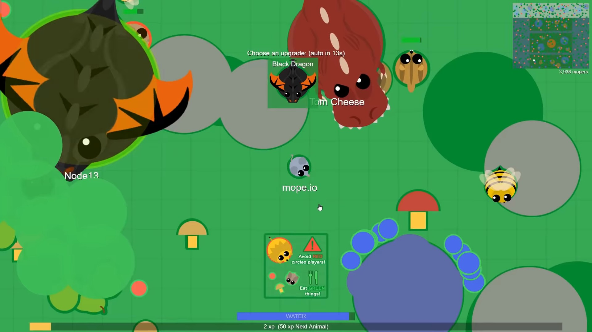

Mope.io Sandbox Mode
How Can I Play Mope.io Sandbox?
You can right now! To play mope.io sandbox mode at this link or you can play right here.
How Do You Play Mope.io Sandbox Mode?
Mope.io sandbox mode is a mode in mope.io where you can level up instantly and become any animal. In this gamemode you could instantly turn into a black dragon. Here is a screenshot from a video from Fortish.
Unfortunately, this mode was removed from the game.
Wait... if it was removed, how can I still play it?
Thanks to Node13 and Abc64, and clone of Mope.io was created with sandbox commands which is what your playing at the top of this page! We made the link public in 2020.
I want to know MORE!
Check out some of the mope.io wiki pages History Of Hacks in Mope.io | Mope.io Wiki and Sandbox | Mope.io Wiki. Join the discord server and subscribe to Node13 on youtube. Contact Node13 at cosmicnode13@gmail.com